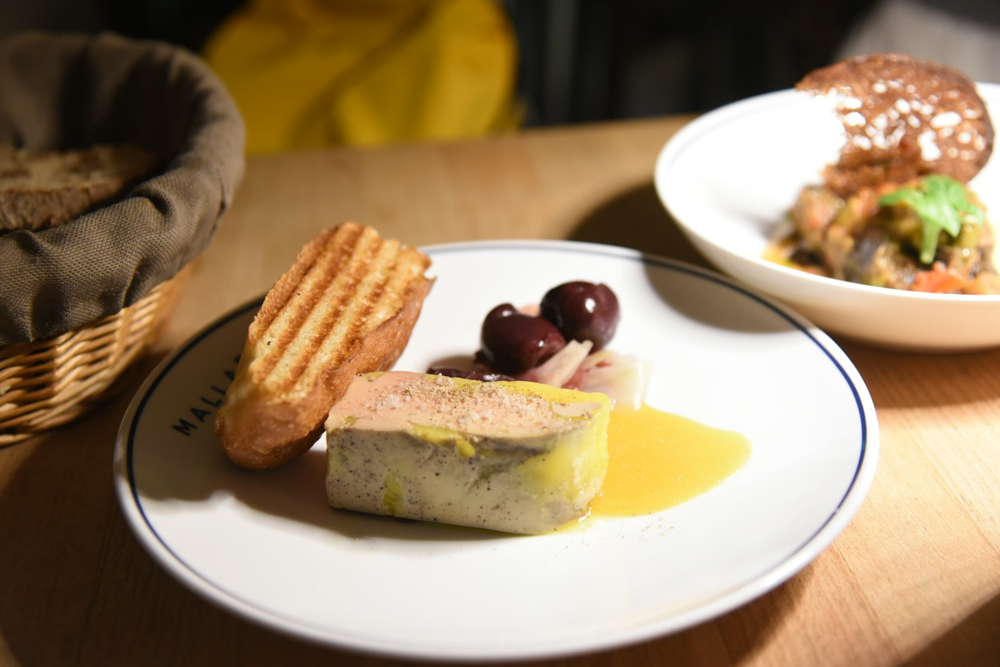
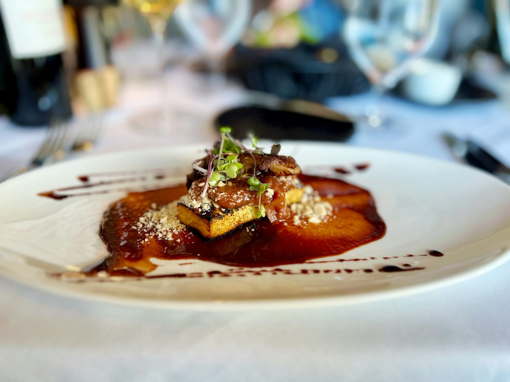
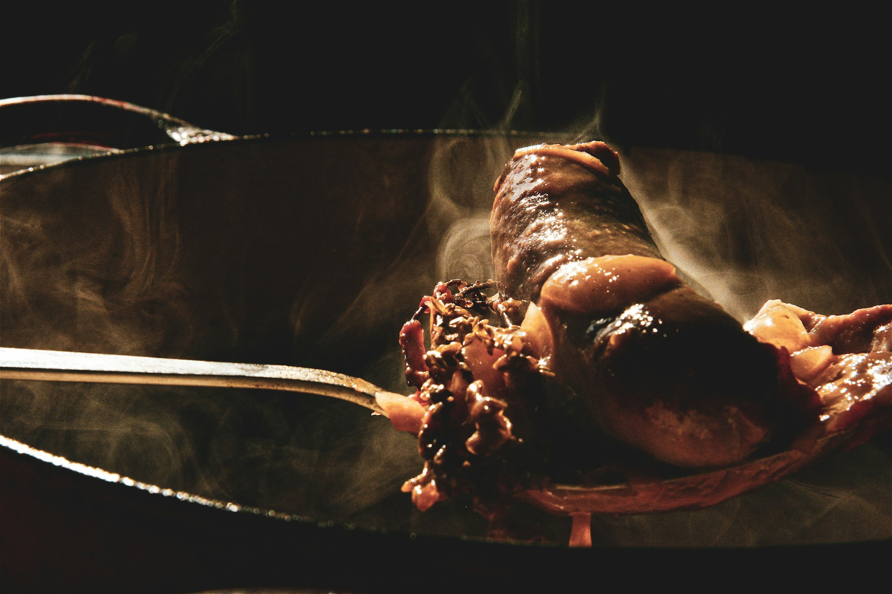

Cassoulet gratiné, croûte bien dorée
Le cassoulet du dimanche, sans y passer la nuit : on part du nôtre, on gratine, et la croûte fait le reste.

Ingrédients
Préparation
- Préchauffez le four à 200 °C. Si vous ajoutez le confit, passez les cuisses 10 minutes au four : la graisse fond et la peau croustille.
- Versez le cassoulet dans une cocotte ou un plat à gratin et réchauffez-le à couvert, à feu doux, jusqu’au frémissement. Le couvercle évite que la viande ne sèche.
- Posez les cuisses de confit sur les haricots.
- Mélangez la chapelure, l’ail haché, le persil et la graisse de canard fondue. Répartissez sur le dessus.
- Enfournez 15 minutes, jusqu’à ce que la croûte soit bien dorée. Servez dans le plat, très chaud.
À cuisiner aussi
Toutes les recettes
ApéritifToasts de foie gras, chutney de figues
Avec Bloc de foie gras de canard23,80 €

Entrée · FêtesFoie gras mi-cuit, pommes caramélisées et Monbazillac
Avec Foie gras de canard mi-cuit42 €

PlatConfit de canard et pommes sarladaises
Avec Confit de canard24,50 €